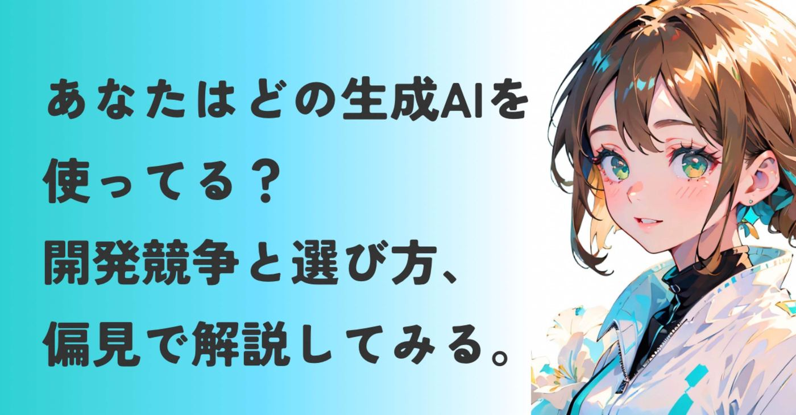
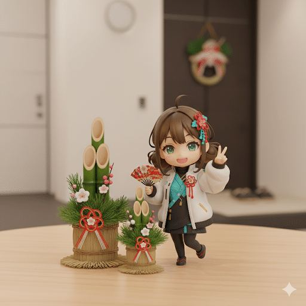
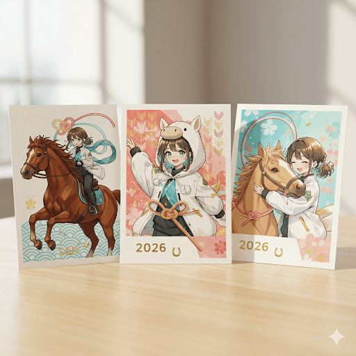
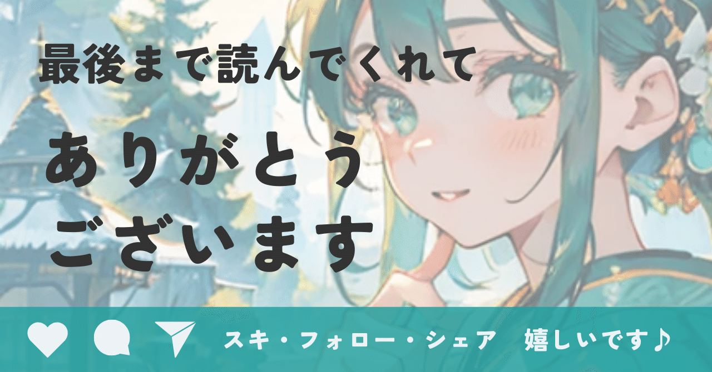

明けましておめでとうございます。
年末年始は息子たちの鼻水を吸っていたら終わっていった金田まりです。
髪が伸びてきたので、リアルに寄せるために
ダンゴヘアにアイコンを変えました。
今年もよろしくお願いします🙇
鼻水とヨダレまみれの正月でしたが、そんな中でも永野ヨウさんのプロンプトや、

https://note.com/yoh_nagano/n/nf316b7dfd2e4?sub_rt=share_b
コンマリさんのプロンプトで細々とイラストを楽しみました♪

https://note.com/konmari/n/n5b76222a728d?sub_rt=share_b
どちらもNanoBananaで生成してます。
プロンプトはもちろん、バナナはすごいなあと改めて感じます。
本格的なイラストをパッと生成してくれるので、まるでその道のプロになったような気分になれるんですよね。
そんなわけで2026年初っ端のテーマは昨年に引き続いて激アツ、「生成AI」について。
昨年はいろんな記事に触発されたし、ChatGPT、Gemini、Copilot…
次々と新しい生成AIが出てきた結果、
で、結局どれがいいの？
と比較するのに疲れた私。
以下のサイトに載ってるだけでも生成AIって
16個もあるみたいで、情報を追い切れない。
https://sogyotecho.jp/generation-ai-service/
だから、機能やスペックだけで選ばなくても
いいよね？というのが私の考え。
本記事は企業情勢がメインのマクロ寄りな視点で、例によって独断と偏見満載です。
界隈に詳しい有識者様やエンジニアさん、
私の認識や解釈違いがあればご指摘いただけるととても嬉しいです。
AIは電子レンジ3時間分の電気代で学習する
「今はこの生成AI一択！」
「使いこなせない奴は時代遅れ」
Xで飛び交う言葉に胃もたれしたのが2025年。
私の立場としては、AIには
AIを作るエンジニアの夫
AIビジネスのスタートアップ支援
私生活と本業の両軸で関わっています。
例えば夫の書斎にはですね、
深層学習（ディープラーニング）用のマシン
が鎮座してます。
その爆熱と電気代で、
AIは膨大な計算資源（と私の忍耐）で成り立つということを、お金で教えてくれました。
チラ見した感じ、これが近そうです▼
https://note.com/shi3zblog/n/n74544cc19497?sub_rt=share_b
音がすごいし、夜中の稼働は厳禁なのね。
稼働すると電子レンジを3時間ぶっ通しで回すレベルの電気代を叩き出していたので、私が
電気代、あなたのお小遣いからよろしく👍
と負担を徹底してからは、稼働してるところを見ていません。
どんなに優れたAIも、結局は物理的なコストの上に成り立つもの。
そんなAIの裏側と家計、本業で出会ったAI、
今の生成AIについて、語ってみます。
AIは深層学習！という私の知ったかぶり。
私がAIを面白いと思った原点は、
産総研発スタートアップ「アダコテック」との出会いでした。
産総研（産業技術総合研究所）とは
日本最大級の国家的な研究機関。ここで生まれた研究成果を、ビジネスとして世に出すのが「産総研発スタートアップ」であり、その看板は信頼と技術力の証でもあります。
当時は「深層学習こそ正義」という風潮の中、
彼らが掲げたのは深層学習を必要としない独自のアルゴリズム。
深層学習だけで、AIをわかった気になっていた自分の浅はかさに嫌気がさしました。
そして「AIの正解は一つじゃない」と教えてくれました。
だからこそ、SNSで眼に入ってくる
「この生成AI以外を使うのは負け犬」
という空気に違和感があります。
ニーズを満たすAIが、利用者にとっての1番だと思うんです。
Microsoftの商売と、Googleが配った設計図
今のAI界隈は、OpenAIを尖兵とするMicrosoftとGoogleのガチンコ勝負ですよね。
これを私なりに整理すると、
Microsoftの商売の巧さ
正直エグいです。
世界中のOfficeソフトから、Copilot経由で開発資金を吸い上げる。
あらゆる大企業を顧客として効率よく巻き込むビジネスモデルに感心しきりです。
特にねんころさんの考察記事がほんとに面白くて、勉強になりました▼
https://note.com/nenkoro_life/n/n1d71cf6b3730
反面、開発に必要なチップ（GPU）やインフラの多くをNVIDIAはじめ他社に依存してるので、
資金を集め続けないといけない弱みはある。
Microsoftが資金でなんとかしちゃいそうな気がするけど、どうなんだろう。
Googleの強者の余裕
AIの心臓部である"Transformer"という設計図を、人類の技術向上のためにと世界に無料で配ったのはGoogleですよね。
彼らが設計図を配らなければ、ChatGPTは存在しなかったかもしれません。
うまく言えませんが、
俺たちが人類を一段階、押し上げるんだぜ！
みたいな気概を感じます。
そんなGoogleは今、逆風の中にいます。
巨額の資金を投じていたApple(後述のニュースも見てね😊)に翻弄される中でのオリエンタルランドの訴訟。
ジレンマの中でGoogleが高性能なAIを出そうと慎重になっている一方で、Microsoftが猛ダッシュで市場を獲りに来ている。
Googleのジレンマとは
Googleは検索広告で稼ぐので、自らその仕組みを壊すAI（回答を即座に出し、広告を踏ませない技術）の移行に慎重になってます。
また世界一正確な検索というブランドがAIの嘘（ハルシネーション）を許さず、完璧を求めすぎて慎重になり、初動が遅れてしまいました。
かつての強者が、今は中小企業や個人のシェアを固めようと泥臭く戦っている。
とはいってもGoogleは
・AIモデルのGemini
・学習用チップ（TPU）、
・OS（AndroidやChrome）
・ブラウザ
を自前で持ってる盤石さ。
そして極めつけのYouTube。
動画から得られるデータ量を保持できるのは
本当に強い。
この辺りの話は、ごまめさんの記事がとても面白くて、メンシプ入ろうか真剣に悩むところ▼
https://note.com/ai_progress/n/nf0a0f8711101
AppleがGeminiを採用するニュースが出ましたね！寝耳に水でびっくりしました▼
https://news.yahoo.co.jp/articles/a32f909bc22cf650546fd503a03e8a2108875261
それは置いておき、
この2社で開発競争は激化するのか、
それとも第3勢力が現れるのか。
GoogleとMicrosoftがバチってるかたわら、
MetaはManus（マナス）を買収して
「自律型エージェント」の覇権を狙ってます。
AIは答えてくれる道具ではなく、
勝手に働いてくれる部下への進化を急いでいるんだろうなと。
https://twitter.com/ctgptlb/status/2005786287647908020?s=46
スタートアップ界隈の端っこにいる身として、このスピード感に常にワクワクさせられます。
Metaも参入してきたら、市場にはGAFAMの
そろい踏み。
GAFAM(ガーファム)
Google、Apple、Facebook（Meta）、Amazon、Microsoftの5大企業の頭文字。
ますます注目せずにはいられませんね。
Googleを推し活視点で応援中
いろいろ語ってきましたが、私はGoogleの
これ、みんなで使っていいよ。
人類の技術を底上げしといたから。
と言わんばかりの、圧倒的な余裕。
本来なら技術を独占して、莫大な利益を得続ける策を取るのが普通だと思ってて。
私はそんな強者の余裕を見せてくれた、
Googleの理念に惹かれるんですよね。
機能という理屈だけでなく、
その企業の理念が好きだから使う
という選択があってもいいかなと思ってます。
深層学習を世界に開放したGoogleに敬意を払い、私はGeminiをメインに使ってます。
ちなみに時々ChatGTPを使うと、「おおっ！」という意外な提案を見せてくれる。
やっぱりどっちもいいな。比べるの難しい。
2026年。どうAIを選び、どう使う？
AIって奥が深いですよね。
正体は開発者をはじめとする誰かの狂気、Googleの余裕、そして電気代の積み重ねでできていることも含めて。
スペックも大切だけれど、もっと自由に、
「うちの子、やっぱいいわ」
と愛でたらいいんじゃないかなと思ったり。
私はスタートアップ支援のために新しい情報を追いつつ、AIと一緒にイラストを描いたり日常を便利にしたりして楽しもうと思います。
さて、今日もお付き合いいただき感謝です。
次回はAIイラストを9日に投稿予定。
2026年が良い年になりますように。
AI、使ってみて良かったな〜と思うこと、
ここがこのAIはすごい！みたいな体験談が
あったらコメントで教えてください♪
